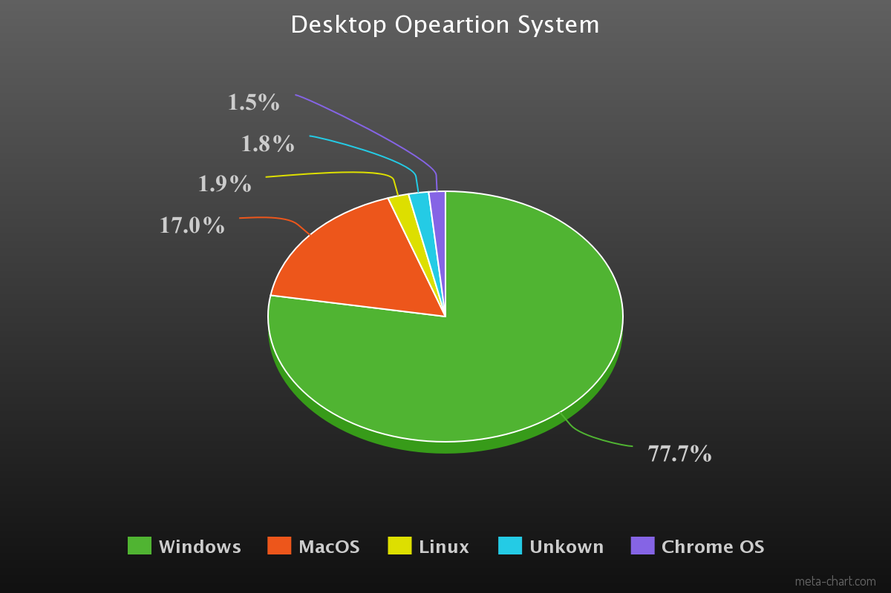
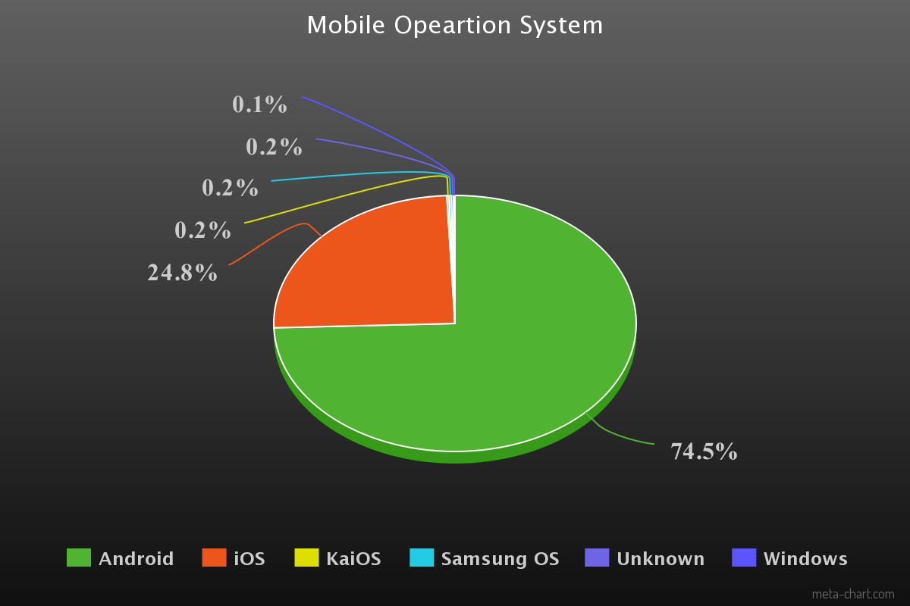

Operating System Usage
The following charts contain data from 2019.
The domniant operating system is clearly Windows, this includes but not limited to Windows 10, Windows 8, and Windows 7.
Due to Android being present in many different smartphones that range frome a variety of companies, while its competitors are usually designed for one brand of phone, it has made it the most popular smartphone OS in the world.
Source